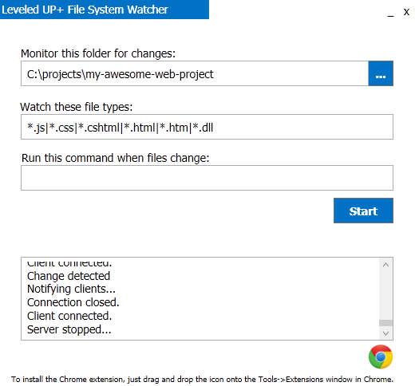

Welcome to Leveled-UP+
Leveled-UP+ is a utility intended to make live reload during web development easier on Windows.
How much time do you waste switching windows and hitting refresh after making a small change? Leveled-UP+ will make that go away.
In the era of single-page apps, we're doing a lot of work in the browser.
This is intended to help you instantly see your changes every time you save, making fiddling with layout, CSS, or even JavaScript EVEN MORE FUN!
It's especially awesome if you are using two+ monitors.
Live reload exists in some other tools, but some of them require you to be working on a certain stack, within a specific IDE, or host your project on a development server that injects some reload code. And then there are others that aren't free.
Leveled-UP+ will currently work only with Chrome. But let's be honest, if you're like me, you're mostly using Chrome for web development anyway. Future versions may include extensions for IE and FireFox.
Get Started
-
Install the thing
First thing to do is download the installer and install the thing on your machine. You can download the installer here.
-
Fire it up
-
Install the Chrome extension
Fire up Chrome and go to the Extensions page (Menu -> Tools -> Extensions).Next, drag the Chrome icon from the Leveled-UP+ app onto the Chrome extensions page.
Chrome should ask you to confirm adding the new extension. Click "Add" to complete the install. -
Start the watcher
In the Leveled-UP+ File System Watcher application, choose the folder that you want to monitor for changes. Probably your project folder.
Set the file type watcher to watch the types of files you are changing. Most commonly things like html, css, js, etc. The default might have you covered, but feel free to change it following the pattern.
Once you've configured those, hit the "Start" button. -
Start the chrome extension on the site you're working on
In Chrome, navigate to the site you're working on. Click the Leveled-UP+ mushroom icon near the omnibar.
You're now ready to do work. Leveled-UP+ is watching your project folder for changes, and Chrome will auto-reload when you do stuff. -
Be awesome
With all the time you're saving, keep being awesome. And contribute to Leveled-UP+ to make it better?
Once you've got it installed, the first thing to do is start it up. You should see something like this:

Authors and Contributors
The project was created by @markthiessen, with some sweet contributions from @stephenvisser and @cbadke.